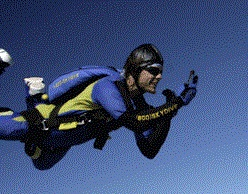

ROSCOE PYELL
I'M BORING
My name is Roscoe Pyell, and I'm boring.
I also don't take very good pictures... so for now, this is all you get. I suppose I'll have to put an actual picture up sometime, but for now I think I can avoid it for just a little bit longer. In fact, you can think of this outfit as my haloween costume. Just think of me as a young Jonathan Goldsmith with a bag on his head...
Aside from my aversion to photographs, I don't have very many interests outside of computers and the internet as a whole. Windsurfing and snowboarding and skydiving are some of the things that come to mind, but those are only the stupid things I do in my freetime.
I'd have to say that a majority of my time is spent on school work. Of course, living on campus helps.
We once tried to ask Randy what he would do if he had to choose between
landing in a tomato field or a road with power lines, and it took us
nearly 20 mintues to get him to answer us. The rest of the time he
just said that he wouldn't ever end up in that situation.
I don't really consider myself a very interesting invdividual. I mean, if
you've bothered reading this far you
have to be bored by now right? If you aren't you have a tougher
constitution that I thought you had.
The guy in the picture there was my instructor. His name's Randy and he works at Skydive Miami and he has absolutely, positively no imagination.

The guy in the picture there was my instructor. His name's Randy and he works at Skydive Miami and he has absolutely, positively no imagination.